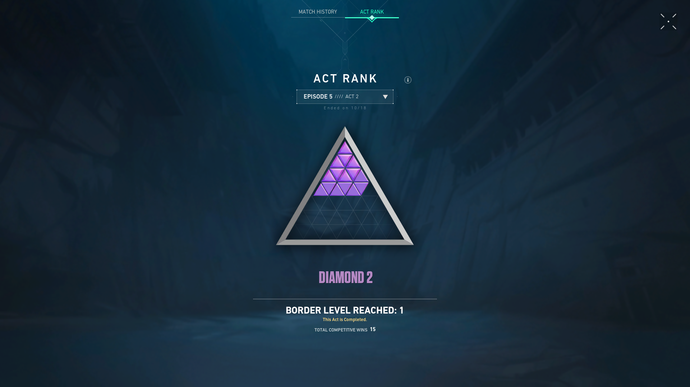
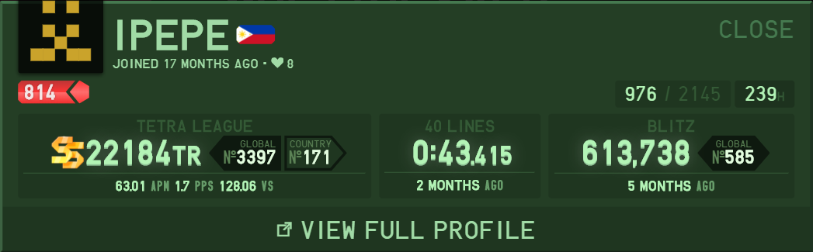
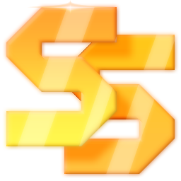
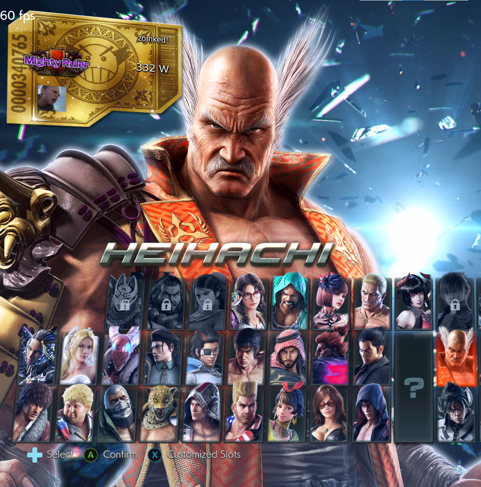
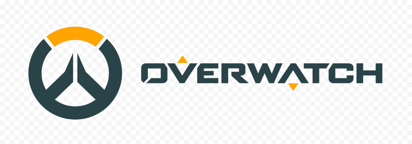
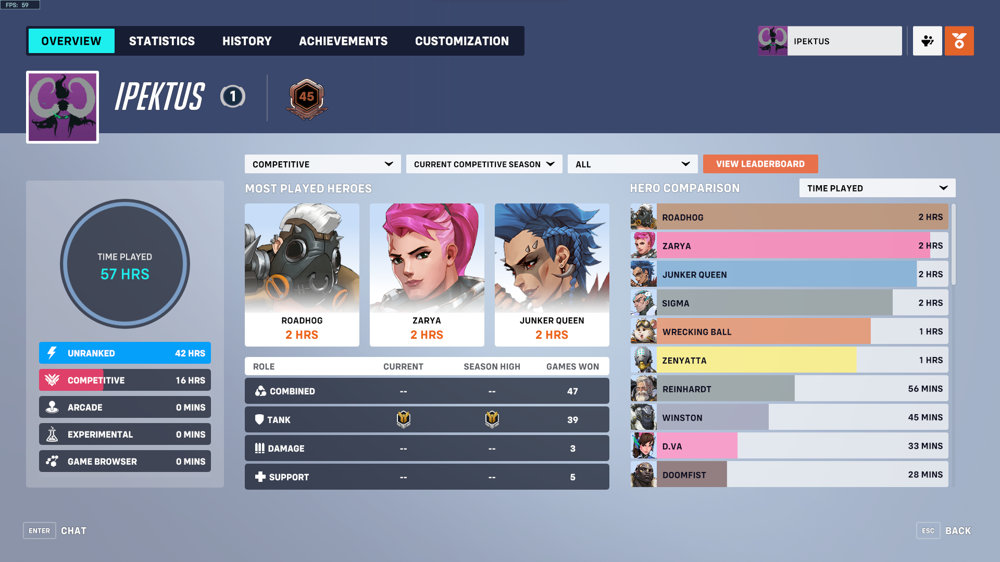

I started playing League of Legends when I was about 10 years old as a way to pass the time with my siblings. After a couple months I eventually unlocked ranked and got addicted to the grind.
As I grew, so did my competitive drive for the game. Over the past 7 seasons I've played over 8000 games. For the first 4 years my goal of ultimately reaching the competitive ladder, which is composed of the top 1000 players was nothing more than a dream
But eventually, I had made it to a rank and skill level at which that goal seemed possible, so I started grinding it out. And after nearly 8 years of playing the game, I reached the rank of Masters  last July 9, 2022, at 1:50 AM.
last July 9, 2022, at 1:50 AM.


I started playing Valorant in the closed beta, though I found it fun at first, the game got easily repetitive and it just felt like it was draining my brain
so I quit before any real high ranks, but not before reaching Diamond  just to prove to myself that I was at least decent at the game.
just to prove to myself that I was at least decent at the game.

My Tetris journey started where everyone else's started at like 5 years old just putting blocks on top of each other. But a little more than a year ago I found a neat client for this block stacking game called Tetr.io, and like a lot of other people I ended up addicted. I eventually started grinding out the Blitz and Versus modes, and reached a rank of  and a Blitz Score of 600k. As of right now, it is the only game I play seriously at a good(ish) level.

I don't have as much stuff to show for Tekken as it's been a long time, but I did reach Eternal Ruler online, which is one rank off blue ranks, which is the third highest division of ranks. Aside from that, most of my achievements have been in the past, I've played in quite a few tourneys versus some of the best players in the Philippines, and at one point I was one of the best players in Katipunan. For the most part though I was overshadowed by my brother, and I was usually just known as his brother. One of the other things I was (somewhat) known for though was my execution which was heavily contrasted by my absolute lack of fundamentals of the game, giving me a playstyle that could be described as monkey-like.


I started playing Overwatch when it came out, never took it quite seriously though. With its sequel out now though, I started playing it a bit more competitively, and as of right now I'm just hoping to reach Diamond so that I can stop playing the game.
I've been playing videogames for as long as I can remember, the game that I could say I was actually good at first though is Counter Strike 1.6. I think that's where I'd say I found my competitive drive especially in terms of videogames, as I'd spend hours trying to beat my brother in a 1v1 on an aim_map. Over the years I've played quite a lot of games, though despite how important it's been in my life, nowadays I wouldn't really call it a hobby or interest anymore. For the most part I'm satisfied with where I'm at in terms of skill in multiplayer videogames, and singleplayer videogames don't really interest me anymore as the just dont provide the same dopamine rush that they did all those years ago. I'm still incredibly happy and thankful to this form of media and I think videogames are one of the best things I've ever gotten to experience, it's shaped a lot of me.